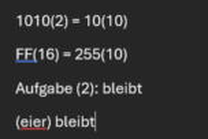
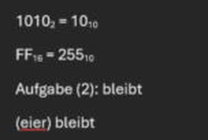

Inhalt
Du schreibst 1010(2) oder FF(16). Ein Klick macht daraus 10102 und FF16, im ganzen Dokument.

➜
Unverändert bleiben: Aufgabe (2) mit Leerzeichen, (eier) und 11(100) mit 3 Ziffern.
Installieren (1 Minute)
⬇ manifest.xml herunterladen
- Word öffnen, Reiter Start, ganz rechts auf Add-Ins klicken, dann auf Weitere Add-Ins.
- Oben auf Meine Add-Ins klicken, dann auf Benutzerdefiniertes Add-In hochladen (bzw. „Mein Add-In hochladen").
- Die heruntergeladene
manifest.xml auswählen und auf Hochladen klicken.
- Fertig. Oben gibt es jetzt den Reiter LAG|ZERØ.
Läuft in Word für Windows, Mac und Word im Browser (Microsoft 365).
Benutzen
- Ganz normal tippen:
1010(2) = 10(10), ohne Leerzeichen vor der Klammer.
- Reiter LAG|ZERØ anklicken, dann auf Basis tiefstellen. Oder über Tools öffnen die Seitenleiste aufmachen.
Entfernen
Start → Add-Ins → Weitere Add-Ins → Meine Add-Ins → bei LAG|ZERØ Tools auf die drei Punkte → Entfernen.